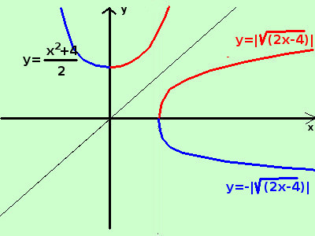

|
sviluppo Data la seguente espressione determinatene, se possibile, la funzione inversa indicandone anche le eventuali restrizioni nel dominio y = √(2x - 4) Il dominio dell'espressione, essendovi un radicale, e' dato dai valori che rendono il radicando positivo o nullo 2x - 4 ≥ 0 → x ≥ 2 quindi D = {x ∈ ℜ / x ≥ 2} E' una parabola orizzontale Non e' una funzione perche' ad ogni valore della x nel dominio (a parte il valore 2) corrispondono 2 valori per la y: ad esempio per x = 4 abbiamo y=±2 Possiamo scomporla in due funzioni, una con il radicale positivo e l'altra con il radicale negativo Per poterlo fare utilizziamo la definizione di modulo y = |√(2x - 4)| y = -|√(2x - 4)|  Limitandoci alla funzione inversa proviamo a scrivere l'espressione nel seguente modo elevando a quadrato entrambe i membri dell'uguaglianzay2 = 2x - 4 trovo quindi l'inversa scambiando fra loro la x e la y x2 = 2y - 4 esplicito la y
a destra una rappresentazione grafica |